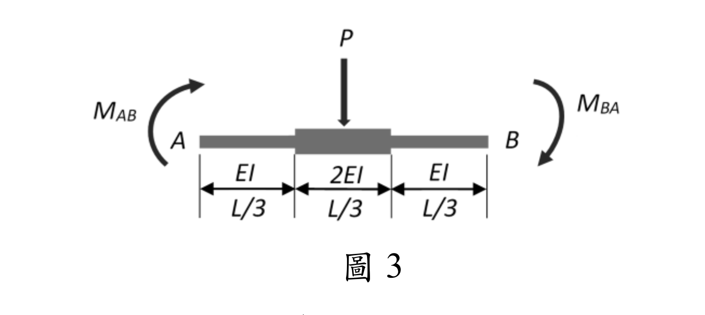
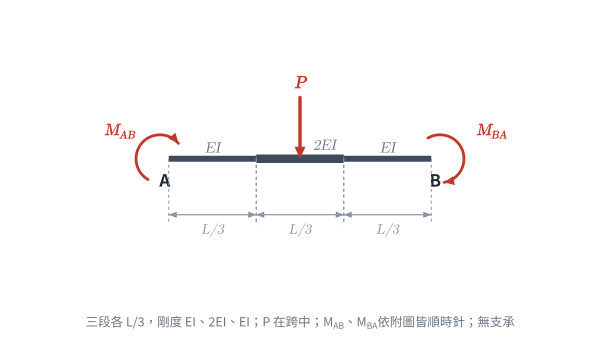
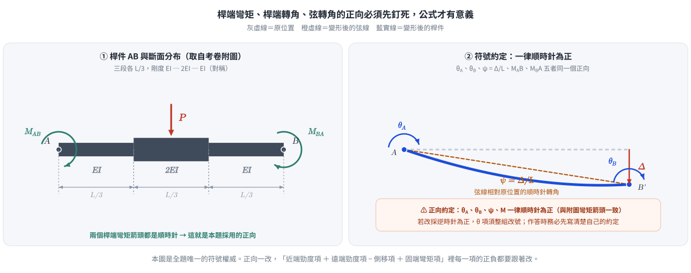
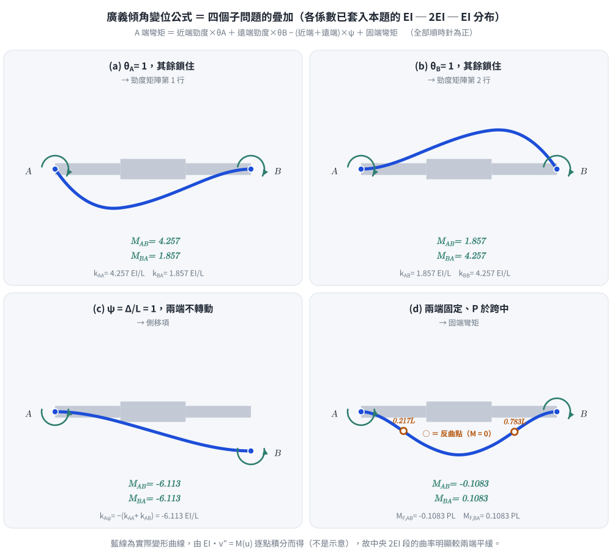
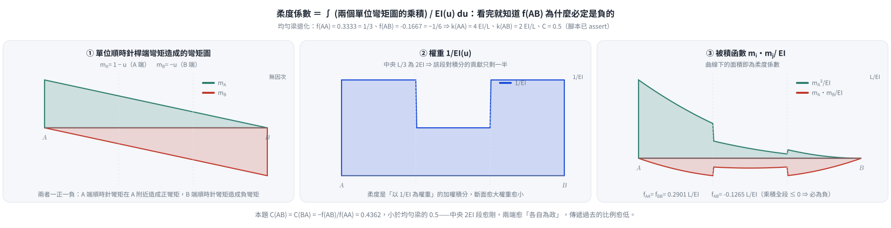
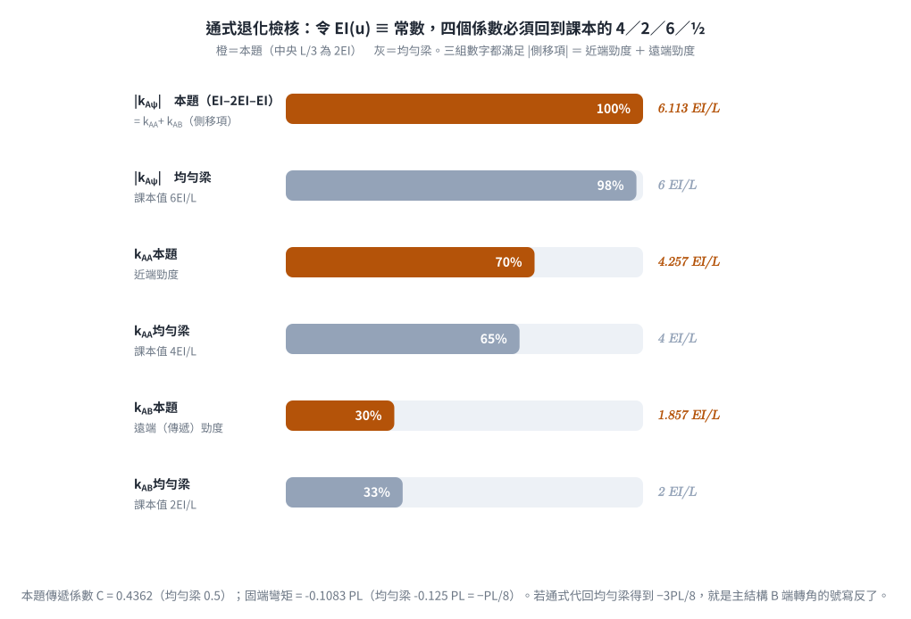

📄 題目正本（考卷原文、附圖與判讀清單；不含解法）
SA-2025-3 題目正本
本檔只記錄考卷上寫了什麼、圖上畫了什麼，不含任何解法。解析見同資料夾
SA-2025-3.md。
判讀清單經使用者確認前，狀態為「待確認」；確認後本檔原則上不再修改（改動須回考卷原圖並記 log）。
| 項目 | 內容 |
|---|---|
| 考卷 | raw/exams/SA-2025_結構學.pdf，第 2 頁上半，第三題（圖 3） |
| 考年 | 2025（民國 114 年）專技高考結構工程技師「結構學」 |
| 配分 | 25 分 |
| 附圖 | SA-2025-3-fig-1.png |
| 判讀狀態 | 已確認（2026-11-07 使用者確認。原轉錄：2026-11-05 轉錄；PyMuPDF 110 dpi 整頁＋500 dpi 局部放大；盲讀於開啟解析前完成） |
1. 考卷原文（逐字）
三、一非均勻斷面之桿件 AB，跨度中央承受集中載重 P，桿件各段之長度及撓曲剛度如圖 3 所示。請推導使用傾角變位法（Slope-deflection method）時，AB 桿件兩端彎矩 MAB 及 MBA 之傾角變位公式。（25 分）
2. 考卷給的公式、附表與參數
- 考卷沒有給任何參考公式或附表。
- 沒有畫支承（為單一桿件的自由體）。
- 題文沒有說明公式是否要含弦轉角（兩端相對側移）項。
- 卷首注意事項：㈠可以使用電子計算器。㈡不必抄題，作答時請將試題題號及答案依照順序寫在試卷上，於本試題上作答者，不予計分。㈢本科目除專門名詞或數理公式外，應使用本國文字作答。
- 考試時間：2 小時。
3. 附圖

證據圖 SA-2025-3-fig-1.png
圖面文字照錄：P、MAB、A、B、MBA、EI、2EI、EI、L/3、L/3、L/3、圖 3
4. 判讀清單
| # | 項目 | 判讀 | 圖上／題文依據 | 把握 |
|---|---|---|---|---|
| 1 | 分段 | A 端起三段各 L/3：EI、2EI、EI（對稱） | 下方三段尺寸線與剛度標示；中段畫較粗 | 確定 |
| 2 | 載重 | P 向下，作用於跨中（中段中點） | 箭頭在中段中央 | 確定 |
| 3 | MAB | 作用於 A 端，順時針 | A 左側弧形箭頭由下往上繞向右（500 dpi） | 確定 |
| 4 | MBA | 作用於 B 端，順時針 | B 右側弧形箭頭由上往下繞 | 確定 |
| 5 | 支承 | 沒有畫支承（單桿自由體） | 圖面 | 確定 |
| 6 | 所求 | MAB、MBA 的傾角變位公式 | 題文 | 確定 |
| 7 | 考卷沒有給 | 公式是否含弦轉角 ψ（兩端相對側移）；θ、ψ 的正向 | 題文、圖面 | 確定（解讀）：採一般式（含 θA、θB、ψ 與固端彎矩），正向與附圖彎矩箭頭一致取順時針；使用者確認 |
轉錄：2026-11-05（SA-U2-3 題目正本推廣・批 2）
確認：2026-11-07 使用者確認
考題編號：SA-2025-3
主分類： SA-U2-3 靜不定結構之傾角變位法
副分類： （無）
分析法： 傾角變位法（Slope-Deflection Method）+ 共軛樑法（Conjugate Beam）
標籤： 傾角變位法 非均勻斷面 勁度係數 傳遞係數 固端彎矩 共軛樑
§1 題目（考卷原文見題目正本）
考卷原文、公式／附表、附圖與判讀清單（已確認）見
SA-2025-3-problem.md。本節只列解題時最容易讀錯的地方與本解使用的記號；題意以題目正本為準。

重繪自考卷附圖，依判讀清單 #1–#7 重繪。攔：端彎矩正向讀反、中段剛度與兩側對調。
常見誤讀
| 項目 | 正確判讀 | 常見誤讀 |
|---|---|---|
| 正向 | 附圖 $M_{AB}$、$M_{BA}$ 皆順時針；$\theta$、$\psi$ 一併取順時針為正（見 §1.5（一）） | $\theta$ 逆時針為正（本解舊版 §1 圖說） |
| 剛度分布 | 三段各 $L/3$：$EI$、$2EI$、$EI$ | 中段 $EI$、兩側 $2EI$ |
本解記號： 桿端彎矩、桿端轉角、弦轉角一律順時針為正（見 §1.5）；其餘沿用 §4。
判讀圖解（解析自繪）

圖 1 題目重繪與符號約定。附圖把 $EI(x)$ 講死了：三段各 $L/3$，剛度依序 $EI$、$2EI$、$EI$。這張圖攔的是本題最大的失分點——正向沒先釘死就開始寫公式；$\theta$、$\psi$、$M$ 五個量必須同一個正向，否則 $-(k_{AA}+k_{AB})\psi$ 這一項的正負會反。
§1.5 ⚠ 勘誤與補算（2026-08-16）
本節為 2026-08-16 後補的勘誤摘要。2026-11-08 起，（一）（二）的更正已併回 §3.5、§4.5、§4.6、§5.1 正文，正文與本節一致。
（一）符號約定：一律「順時針為正」
考卷附圖的 $M_{AB}$、$M_{BA}$ 兩個彎矩箭頭都是順時針；§4.6 的通式與 §5.1 的均勻梁驗核
$M_{AB} = \frac{2EI}{L}(2\theta_A + \theta_B - 3\psi) + M_F$ 也只有在「桿端彎矩、桿端轉角、弦轉角全部順時針為正」下才成立。
舊版 §1 圖說（2026-11-07 已改為指向題目正本）寫的「$\theta_A$、$\theta_B$ 逆時針為正」與上述牴觸。若照字面採逆時針正，$\theta$ 項須整組改號。作答時先寫清楚自己的約定，比背哪一種慣例重要。
（二）$\Delta_B^{(P)}$ 應與 $\Delta_A^{(P)}$ 反號
單位順時針彎矩造成的彎矩圖（下垂為正）為
$$\bar m_A(x) = +\left(1 - \frac{x}{L}\right), \qquad \bar m_B(x) = -\frac{x}{L}$$
兩者一正一負。2026-11-08 前的 §4.5 Step D-3 把 $\bar m_A$ 也寫成負的，導致 $\Delta_A^{(P)}$ 與 $\Delta_B^{(P)}$ 同號（已改正）。以均勻梁代入：
$$\Delta_A^{(P)} = +\frac{PL^2}{16EI}, \qquad \Delta_B^{(P)} = -\frac{PL^2}{16EI}$$
由反對稱性 $M_{F,BA} = -M_{F,AB}$，相容條件給
$$\left(f_{AA} - f_{AB}\right)M_{F,AB} = -\Delta_A^{(P)} \;\Longrightarrow\; \left(\frac{L}{3EI} + \frac{L}{6EI}\right)M_{F,AB} = -\frac{PL^2}{16EI} \;\Longrightarrow\; M_{F,AB} = -\frac{PL}{8} \;\checkmark$$
舊版的同號版本會得到 $M_F = 3PL/8$（2026-11-08 前 §4.5 Step D-5 的算式字面上就是這個結果，只是結論直接寫成 $PL/8$；現行 §4.5 已改正）。
（三）套入本題 $EI$ 分布後的實際數值
把 §4.6 的通式套進附圖的 $EI$–$2EI$–$EI$（各 $L/3$）分布，逐段精確積分得：
| 係數 | 本題（$EI$–$2EI$–$EI$） | 均勻梁 | 單位 |
|---|---|---|---|
| $f_{AA} = f_{BB}$ | $\dfrac{47}{162} = 0.29012$ | $\dfrac{1}{3} = 0.33333$ | $L/EI$ |
| $f_{AB}$ | $-\dfrac{41}{324} = -0.12654$ | $-\dfrac{1}{6} = -0.16667$ | $L/EI$ |
| $k_{AA} = k_{BB}$ | $\dfrac{1128}{265} = 4.2566$ | $4$ | $EI/L$ |
| $k_{AB} = k_{BA}$ | $\dfrac{492}{265} = 1.8566$ | $2$ | $EI/L$ |
| $k_{A\psi} = -(k_{AA}+k_{AB})$ | $-\dfrac{324}{53} = -6.1132$ | $-6$ | $EI/L$ |
| $C_{AB} = C_{BA}$ | $\dfrac{41}{94} = 0.43617$ | $0.5$ | — |
| $\theta_A^{(P)}$ | $\dfrac{13}{288} = 0.045139$ | $\dfrac{1}{16} = 0.0625$ | $PL^2/EI$ |
| $M_{F,AB}$ | $-\dfrac{13}{120} = -0.10833$ | $-\dfrac{1}{8} = -0.125$ | $PL$ |
因此本題的傾角變位公式為
$$\boxed{M_{AB} = \frac{1128}{265}\frac{EI}{L}\theta_A + \frac{492}{265}\frac{EI}{L}\theta_B - \frac{324}{53}\frac{EI}{L}\psi - \frac{13}{120}PL}$$
$$\boxed{M_{BA} = \frac{492}{265}\frac{EI}{L}\theta_A + \frac{1128}{265}\frac{EI}{L}\theta_B - \frac{324}{53}\frac{EI}{L}\psi + \frac{13}{120}PL}$$
值得注意的是 $C = 41/94 < 1/2$：中央 $L/3$ 愈剛，兩端愈「各自為政」，傳遞過去的比例反而變低。
這與「斷面愈大傳得愈多」的直覺相反，是本題容易答錯方向的地方。
§2 核心精神與出題者意圖
核心觀念： 非均勻斷面桿件不能直接套用均勻梁的傾角變位公式（$M_{AB} = \frac{2EI}{L}(2\theta_A+\theta_B-3\psi)+M_{F,AB}$），需重新以單位載重法（虛功法）或共軛樑法推導廣義勁度係數，再以疊加原理建立傾角變位公式。
問題結構： 非均勻梁傾角變位公式由三部分疊加：
- 固端彎矩（Fixed-End Moments，FEM）：$M_{F,AB},\,M_{F,BA}$，來自載重 P
- 端點旋轉的貢獻：$\theta_A$ 和 $\theta_B$ 對端部彎矩的貢獻（由勁度係數決定）
- 弦轉角的貢獻：$\psi$ 對端部彎矩的貢獻（側移效應）
出題者意圖：
- 測試是否理解非均勻梁需重新推導勁度係數（不能套公式）
- 測試共軛樑法或單位載重法的應用
- 測試廣義傾角變位方程的結構
§3 解題戰略地圖
```
Step 1：定義廣義傾角變位公式的形式
M_AB = S_AB·(EI₀/L)·(θA + C_BA·θB) - 6·k_A·(EI₀/L²)·Δ + M̄_F,AB
M_BA = S_BA·(EI₀/L)·(θB + C_AB·θA) - 6·k_B·(EI₀/L²)·Δ + M̄_F,BA
Step 2：以疊加法分解成 4 個子問題：
(a) θA = 1, θB = 0, Δ = 0, P = 0 → 求勁度係數 S_AA、傳遞係數 C_AB
(b) θA = 0, θB = 1, Δ = 0, P = 0 → 求勁度係數 S_BA、傳遞係數 C_BA
(c) θA = 0, θB = 0, Δ = 1, P = 0 → 求側移剛度貢獻
(d) θA = 0, θB = 0, Δ = 0, P = P → 求固端彎矩 M_F,AB、M_F,BA
Step 3：各子問題用共軛樑法（或虛功法）求解
Step 4：組合成最終公式
```
§3.5 變數層次分析（Variable Hierarchy Analysis）
最終目標
推導 $M_{AB}$ 與 $M_{BA}$ 之傾角變位公式，表示為 $\theta_A,\,\theta_B,\,\psi,\,P,\,L$ 的函數（係數由 EI 分布決定）。
L1：直接給定
| 符號 | 說明 |
|---|---|
| $L$ | 桿件總長 |
| $P$ | 跨中集中載重（向下） |
| $\theta_A,\,\theta_B$ | 兩端旋轉角（順時針正，與附圖彎矩箭頭一致） |
| $\psi = \Delta/L$ | 弦轉角（側移/桿長） |
| $EI(x)$ | 斷面彎曲剛度分布（由圖決定） |
L2：需推導
| 符號 | 推導方法 | 卡關? |
|---|---|---|
| 柔度係數 $\delta_{AA},\,\delta_{BB},\,\delta_{AB}$ | 共軛樑法：對單位端部彎矩積分 $\int M\bar{M}/EI\,dx$ | |
| 勁度係數 $k_{AA},\,k_{BB},\,k_{AB}$ | 柔度矩陣求逆 | |
| 傳遞係數 $C_{AB}=k_{AB}/k_{AA}$ | 從勁度矩陣直接計算 | |
| 固端彎矩 $M_{F,AB},\,M_{F,BA}$ | 兩端固定、P 在中點，用共軛樑法或三彎矩方程求 | |
| 側移勁度 $k_{\psi}$ | 由桿件剪力平衡（節點平移條件）推導 |
L3：深層知識
| 知識點 | 說明 | 卡關? |
|---|---|---|
| 為何非均勻梁不能直接用 4EI/L、2EI/L | 這些係數來自均勻梁的積分，EI(x) 改變後積分值不同 | |
| 共軛樑中「虛荷載」的物理意義 | M/EI 圖即彎曲變形曲率，共軛樑的支承反力 = 原樑端部轉角 | |
| 柔度矩陣的反對稱性 $\delta_{AB} < 0$ | 一端施加彎矩，另端轉向相反，故交叉柔度為負 | |
| 疊加原理的適用條件 | 線彈性、小變形 ✓ |
§4 詳細推導
4.1 廣義傾角變位公式的形式
設參考剛度為 $EI_0$（取桿件某特徵值），以疊加原理：
$$\boxed{M_{AB} = k_{AA}\,\theta_A + k_{AB}\,\theta_B + k_{A\psi}\,\psi + M_{F,AB}}$$
$$\boxed{M_{BA} = k_{BA}\,\theta_A + k_{BB}\,\theta_B + k_{B\psi}\,\psi + M_{F,BA}}$$
其中各係數由以下四個子問題分別確定。

圖 2 四個子問題的疊加，各係數已套入本題的 $EI$–$2EI$–$EI$ 分布（見 §1.5）。藍線是由 $EI \cdot v'' = M(x)$ 逐段積分算出的實際變形曲線，不是示意——中央 $2EI$ 段的曲率明顯較兩端平緩。這張圖攔的是「公式只寫出一半」：漏掉側移項或固端彎矩項。
4.2 子問題（a）：$\theta_A = 1,\;\theta_B = 0,\;\psi = 0,\;P = 0$
物理描述： A 端施加使 $\theta_A = 1$ 所需的彎矩，B 端固定（$\theta_B = 0$），無載重、無側移。
方法：共軛樑法
Step A-1：建立原樑力系
設 A 端施加彎矩 $M_1$（待求），B 端反力彎矩 $M_2$（待求）。
桿件無外加橫向載重，彎矩線性分布：
$$M(x) = M_1\!\left(1 - \frac{x}{L}\right) + M_2\!\left(\frac{x}{L}\right)$$
Step A-2：建立共軛樑
共軛樑以 $M(x)/EI(x)$ 為等效荷載（曲率圖），兩端的共軛樑支承條件 = 原樑端部旋轉角。
對原樑端部條件 $(\theta_A = 1,\;\theta_B = 0)$，共軛樑的「反力」應滿足：
$$\bar{R}_A^* = \theta_A = 1, \qquad \bar{R}_B^* = \theta_B = 0$$
（共軛樑中，支承反力 = 原樑端部旋轉角。）
Step A-3：共軛樑平衡
設共軛樑的等效荷載為 $q^*(x) = M(x)/EI(x)$，則共軛樑的平衡方程：
$$\bar{R}_A^* + \bar{R}_B^* = \int_0^L \frac{M(x)}{EI(x)}\,dx \implies 1 + 0 = \int_0^L \frac{M(x)}{EI(x)}\,dx$$
$$\bar{R}_B^* \cdot L = \int_0^L \frac{M(x)}{EI(x)} \cdot x\,dx \implies 0 = \int_0^L \frac{M(x)}{EI(x)}\,x\,dx$$
定義柔度積分（以 $u = x/L$ 為積分變數）：
$$f_{AA} \equiv L\!\int_0^1 \frac{(1-u)^2}{EI(u)}\,du, \qquad f_{BB} \equiv L\!\int_0^1 \frac{u^2}{EI(u)}\,du$$
$$f_{AB} \equiv -L\!\int_0^1 \frac{u(1-u)}{EI(u)}\,du \quad (\text{注意：}f_{AB} < 0)$$
代入共軛樑方程後，可解出：
$$M_1 = k_{AA}, \qquad M_2 = k_{BA} = C_{AB}\cdot k_{AA}$$
其中勁度係數：
$$k_{AA} = \frac{f_{BB}}{f_{AA}f_{BB} - f_{AB}^2}, \qquad k_{BA} = \frac{-f_{AB}}{f_{AA}f_{BB} - f_{AB}^2}$$
傳遞係數（A→B 方向）：
$$C_{AB} = \frac{k_{BA}}{k_{AA}} = \frac{-f_{AB}}{f_{BB}}$$
對均勻梁驗核（$EI = const$）：
$$f_{AA} = f_{BB} = \frac{L}{3EI},\quad f_{AB} = -\frac{L}{6EI}$$
$$k_{AA} = \frac{L/(3EI)}{(L/3EI)^2 - (L/6EI)^2} = \frac{4EI}{L},\quad k_{BA} = \frac{2EI}{L},\quad C_{AB} = \frac{1}{2}\;\checkmark$$

圖 3 柔度係數 $f_{ij} = \int \bar m_i \bar m_j / EI \, \mathrm{d}x$ 的三個組成。$\bar m_A$ 全段為正、$\bar m_B$ 全段為負，所以乘積全段 $\le 0$，$f_{AB}$ 必定是負的。這張圖攔的就是 $f_{AB}$ 符號寫錯——一旦寫成正值，傳遞係數 $C = -f_{AB}/f_{AA}$ 會算成負數。
4.3 子問題（b）：$\theta_A = 0,\;\theta_B = 1,\;\psi = 0,\;P = 0$
由對稱性，僅需交換 A↔B：
$$k_{BB} = \frac{f_{AA}}{f_{AA}f_{BB} - f_{AB}^2}, \qquad k_{AB} = \frac{-f_{AB}}{f_{AA}f_{BB} - f_{AB}^2}$$
傳遞係數（B→A 方向）：
$$C_{BA} = \frac{k_{AB}}{k_{BB}} = \frac{-f_{AB}}{f_{AA}}$$
對均勻梁：$k_{AB} = 2EI/L$，$k_{BB} = 4EI/L$，$C_{BA} = 1/2\;\checkmark$
4.4 子問題（c）：$\theta_A = 0,\;\theta_B = 0,\;\Delta = 1\;(\psi = 1/L),\;P = 0$
弦轉角的影響： 兩端保持零旋轉但相對側移 $\Delta = 1$。
等效方式：施加 $-\psi$ 的虛擬固端旋轉，使用「反彎矩法」。
用簡單物理論述（對稱情況）：
若桿件為對稱（$f_{AA} = f_{BB}$，則由「正比關係」：
$$k_{A\psi} = -(k_{AA} + k_{AB}) = -(1 + C_{AB})\,k_{AA}$$
更嚴格地，利用「弦轉角等效為兩端施加相反旋轉（相對轉動 $\psi$）」：
$$k_{A\psi} = -(k_{AA} + k_{AB}), \qquad k_{B\psi} = -(k_{BB} + k_{BA})$$
對均勻梁：
$$k_{A\psi} = -(4EI/L + 2EI/L) = -6EI/L$$
故對應傾角變位公式中的 $-3\psi$ 項：$k_{A\psi}\cdot\psi = -6EI/L \cdot\psi$（代入 $\psi = \Delta/L$ 即得 $-6EI\Delta/L^2$，與標準公式一致 $\checkmark$）
4.5 子問題（d）：$\theta_A = 0,\;\theta_B = 0,\;\psi = 0,\;P = P$（固端彎矩）
兩端完全固定，跨中施加 $P$。
Step D-1：設固端彎矩 $M_{F,AB}$（A 端）、$M_{F,BA}$（B 端），與全文一致取順時針為正。
Step D-2：主結構取簡支梁（虛功法／共軛樑法）。
在簡支主結構上施加 $P$（跨中），主結構彎矩圖（下垂為正）：
$$M_0(x) = \frac{Px}{2} \quad (0 \le x \le L/2), \qquad M_0(x) = \frac{P(L-x)}{2} \quad (L/2 \le x \le L)$$
Step D-3：相容條件（原樑兩端轉角 = 0）
$$\theta_A = 0 : \quad f_{AA}\cdot M_{F,AB} + f_{AB}\cdot M_{F,BA} + \Delta_A^{(P)} = 0$$
$$\theta_B = 0 : \quad f_{AB}\cdot M_{F,AB} + f_{BB}\cdot M_{F,BA} + \Delta_B^{(P)} = 0$$
其中 $\Delta_A^{(P)}$、$\Delta_B^{(P)}$ 為主結構（簡支梁）在 $P$ 作用下 A、B 端的轉角（順時針為正），以單位順時針端彎矩的彎矩圖為虛擬系統：
$$\bar{m}_A(x) = +\left(1 - \frac{x}{L}\right), \qquad \bar{m}_B(x) = -\frac{x}{L}$$
（A 端順時針 ⇒ 下垂；B 端順時針 ⇒ 上拱，所以兩者一正一負，與 §4.2 的 $f_{AB} < 0$ 同一個道理。）
$$\Delta_A^{(P)} = \int_0^{L} \frac{M_0(x)\,\bar{m}_A(x)}{EI(x)}\,dx, \qquad \Delta_B^{(P)} = \int_0^{L} \frac{M_0(x)\,\bar{m}_B(x)}{EI(x)}\,dx$$
Step D-4：均勻梁驗核（$EI$ = const）
$$\Delta_A^{(P)} = \frac{P}{2EI}\!\int_0^{L/2}\! x\left(1-\frac{x}{L}\right)dx + \frac{P}{2EIL}\!\int_{L/2}^{L}\!(L-x)^2\,dx = \frac{PL^2}{24EI} + \frac{PL^2}{48EI} = +\frac{PL^2}{16EI}$$
由對稱，$\Delta_B^{(P)} = -\dfrac{PL^2}{16EI}$（A 端順時針、B 端逆時針，簡支梁跨中受載的兩端轉向本來就相反）。
Step D-5：解固端彎矩
載重與斷面皆對稱 ⇒ $M_{F,BA} = -M_{F,AB}$。代入 $\theta_A = 0$ 式：
$$\left(f_{AA} - f_{AB}\right)M_{F,AB} = -\Delta_A^{(P)}$$
均勻梁：$\left(\dfrac{L}{3EI} + \dfrac{L}{6EI}\right)M_{F,AB} = -\dfrac{PL^2}{16EI} \Rightarrow M_{F,AB} = -\dfrac{PL}{8},\; M_{F,BA} = +\dfrac{PL}{8}\;\checkmark$（與標準式相同）
本題 $EI$–$2EI$–$EI$：$f_{AA} - f_{AB} = \dfrac{47}{162} + \dfrac{41}{324} = \dfrac{5}{12}\dfrac{L}{EI}$、$\Delta_A^{(P)} = \dfrac{13}{288}\dfrac{PL^2}{EI}$
$$M_{F,AB} = -\frac{13}{288}\cdot\frac{12}{5}PL = -\frac{13}{120}PL,\qquad M_{F,BA} = +\frac{13}{120}PL$$
⚠ 2026-11-08 前的版本在 D-1 寫「逆時針正」、D-3 把 $\bar m_A$ 也寫成負的，使 $\Delta_A^{(P)}$ 與 $\Delta_B^{(P)}$ 同號，再以同號右端項湊出 $M_F = PL/8$（符號與量值都靠巧合）。照同號版本代回，會得 $3PL/8$。
4.6 最終傾角變位公式
整合四個子問題，廣義傾角變位公式：
$$\boxed{M_{AB} = k_{AA}\,\theta_A + k_{AB}\,\theta_B - (k_{AA}+k_{AB})\,\psi + M_{F,AB}}$$
$$\boxed{M_{BA} = k_{BA}\,\theta_A + k_{BB}\,\theta_B - (k_{BA}+k_{BB})\,\psi + M_{F,BA}}$$
其中：
$$k_{AA} = \frac{f_{BB}}{D},\quad k_{BB} = \frac{f_{AA}}{D},\quad k_{AB} = k_{BA} = \frac{-f_{AB}}{D}$$
$$D \equiv f_{AA}f_{BB} - f_{AB}^2 \quad (\text{柔度矩陣行列式})$$
柔度係數（需依圖示 EI 分布積分）：
$$f_{AA} = L\!\int_0^1 \frac{(1-u)^2}{EI(u)}\,du,\quad f_{BB} = L\!\int_0^1 \frac{u^2}{EI(u)}\,du,\quad f_{AB} = -L\!\int_0^1 \frac{u(1-u)}{EI(u)}\,du$$
固端彎矩（兩端固定，P 在跨中）：
$$\begin{pmatrix}M_{F,AB}\\M_{F,BA}\end{pmatrix} = \frac{1}{D}\begin{pmatrix}f_{BB} & -f_{AB}\\-f_{AB} & f_{AA}\end{pmatrix}\begin{pmatrix}-\Delta_A^{(P)}\\-\Delta_B^{(P)}\end{pmatrix}$$
$$\Delta_A^{(P)} = +L\!\int_0^1 \frac{M_0(u)(1-u)}{EI(u)}\,du,\quad \Delta_B^{(P)} = -L\!\int_0^1 \frac{M_0(u)\cdot u}{EI(u)}\,du \quad (\text{順時針為正，兩者反號})$$
$$M_0(u) = \frac{PL}{2}\min(u,\,1-u) \quad \text{（簡支樑 P 在中點的彎矩圖）}$$
§5 進階探討
5.1 均勻梁（prismatic）的驗核
令 $EI(x) = EI = \text{const}$，代入各積分：
| 係數 | 通用公式 | 均勻梁結果 |
|---|---|---|
| $f_{AA} = f_{BB}$ | $L\int_0^1(1-u)^2/EI\,du$ | $L/(3EI)$ |
| $f_{AB}$ | $-L\int_0^1 u(1-u)/EI\,du$ | $-L/(6EI)$ |
| $D$ | $f_{AA}^2 - f_{AB}^2$ | $L^2/(12EI^2)$ |
| $k_{AA} = k_{BB}$ | $f_{AA}/D$ | $4EI/L$ |
| $k_{AB} = k_{BA}$ | $-f_{AB}/D$ | $2EI/L$ |
| $C_{AB} = C_{BA}$ | $-f_{AB}/f_{AA}$ | $1/2$ |
| $M_{F,AB} = -M_{F,BA}$ | 由固端條件（§4.5） | $-PL/8$ |
代入廣義公式：
$$M_{AB} = \frac{4EI}{L}\theta_A + \frac{2EI}{L}\theta_B - \frac{6EI}{L}\psi - \frac{PL}{8}$$
$$= \frac{2EI}{L}(2\theta_A + \theta_B - 3\psi) - \frac{PL}{8}\;\checkmark$$

圖 4 把通式的 $EI(x)$ 換成常數重算一遍，三個係數必須回到課本的 $4$、$2$、$6\,(EI/L)$，傳遞係數回到 $1/2$，固端彎矩回到 $-PL/8$。這張圖攔的是推導中途的積分或符號錯誤——特別是 §1.5（二）那個 $\Delta_B^{(P)}$ 的號：寫反的話這裡會得到 $-3PL/8$。
5.2 傳遞係數的意義
- 均勻梁：$C = 1/2$（近端施加彎矩，遠端承受一半的傳遞彎矩）
- 非均勻梁：$C_{AB} = -f_{AB}/f_{BB}$，$C_{BA} = -f_{AB}/f_{AA}$
- 若 A 端較 B 端剛（截面較大），則 $f_{AA} < f_{BB}$，故 $C_{BA} > C_{AB}$（B 傳遞到 A 的比例較大）
5.3 與矩陣位移法的等效性
廣義傾角變位方程即為矩陣位移法中局部勁度矩陣的 2×2 子矩陣：
$$\begin{pmatrix}M_{AB}\\M_{BA}\end{pmatrix} = \begin{pmatrix}k_{AA} & k_{AB}\\k_{BA} & k_{BB}\end{pmatrix}\begin{pmatrix}\theta_A\\\theta_B\end{pmatrix} + \text{側移修正項} + \text{固端彎矩}$$
§6 本題知識點索引
| 知識點 | 概念 ID |
|---|---|
| 傾角變位方程 | [[SLOPE-DEFLECTION-EQUATION]] |
| 固端彎矩 | [[FIXED-END-MOMENT]] |
| 勁度矩陣 | [[STIFFNESS-MATRIX]] |
| 傳遞係數 | [[CARRY-OVER-FACTOR]] |
| 彎矩分配法 | [[MOMENT-DISTRIBUTION-METHOD]] |
解析日期：2026-07-02 ｜ 圖解補繪＋勘誤：2026-08-16（向量圖，腳本 gen_SA-2025-3.py，可重跑；改 EI_PROFILE 重跑，四張圖的數值與變形曲線會一起變）
修正日期：2026-11-07（§1 改為指向題目正本並放重繪附圖（figs/SA-2025-3-fig-1-problem.svg）、加常見誤讀；原 §1 解析自繪圖移至「判讀圖解（解析自繪）」；圖由 gen_SA-2025-3_problem.py 產生，可重跑）
修正日期：2026-11-08（勘誤殘留清除：§1.5 的符號更正併回正文——§3.5 L1 θ 正向改順時針、§4.4 k_Aψ 式刪多餘的 ψ、§4.5 改寫（D-1 順時針正、m̄_A = +(1−x/L)、Δ_A^(P) 與 Δ_B^(P) 反號、M_F,AB = −PL/8 並補本題 −13PL/120 的推導）、§4.6 Δ_A^(P) 式改正號、§5.1 表與均勻梁驗核式 +PL/8 → −PL/8；最終公式（§1.5（三））不變。圖 1 警示文字同步。驗證：scripts/fixes/2026-11-08_recalc_SA-U2-3_B2.py，柔度法分段積分＋三段梁元素凝聚兩路徑，MISMATCHES: 0）
修正日期：2026-11-08（落實檢查後補清勘誤殘留：§1.5（二）兩處仍以現在式指稱「§4.5 Step D-3／D-5 的同號錯誤」，改為「2026-11-08 前的版本，現行 §4.5 已改正」；gen_SA-2025-3.py 檔頭註解同步。數值與最終公式不變）